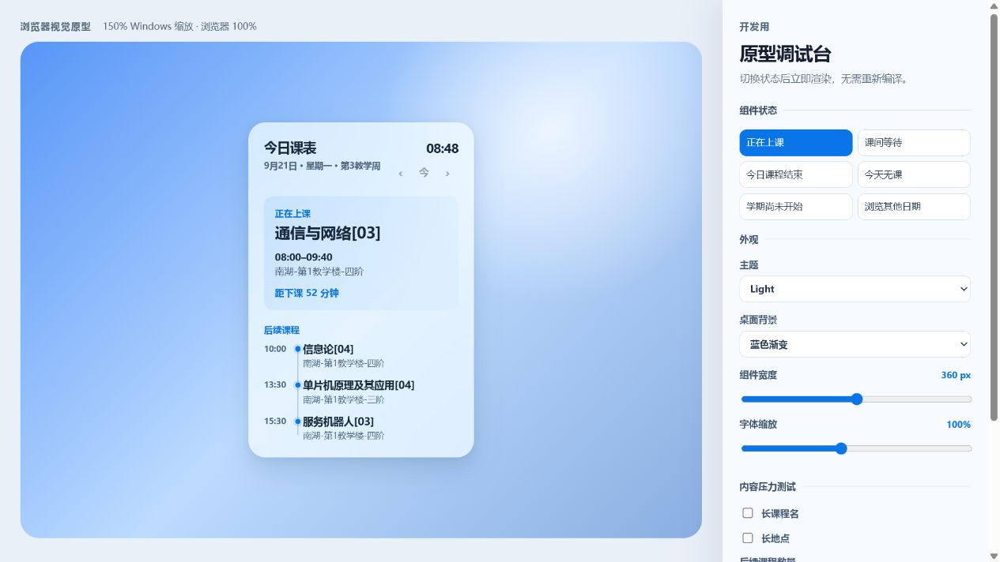

2026 — 至今
Windows App
课刻
Desktop Course Widget让一天在桌面上缓慢流动。
从学校教务系统导入课表，在 Windows 桌面直接查看当前课程、下一节课程和今天剩余的安排；完整周课表、课程与作息则在独立窗口里继续管理。无需账号，课表文件与设置都留在本机。
持续开发中 · 最新稳定版 v0.4.0
Windows 10 / 11
支持平台
Local-first
无需账号 · 数据保存在本机
Excel .xlsx
本地解析并预览后导入

Capabilities
把最常看的“今天”留在桌面，把需要编辑和整理的内容放进独立课表窗口。
桌面时间流
突出当前课程、下一节课程与当天剩余安排，不必反复打开教务系统。
完整周课表
查看星期一至星期日，并直接新增、修改或删除课程。
Excel 导入
在本机解析教务系统导出的 .xlsx，先预览确认，再写入课表。
多课表管理
保存不同学期或不同版本的课表，并快速切换当前使用的课表。
动态作息
按实际课程安排配置 1～24 节课的开始与结束时间。
桌面常驻
支持系统托盘、开机启动、单实例、窗口位置恢复与多显示器适配。
Built with
保持桌面端与 Web 界面足够轻，核心数据与文件解析放在本地完成。
Tauri 2 Rust TypeScript Vite
Excel 解析使用 Calamine。课刻目前仅支持 Windows 10 / 11。